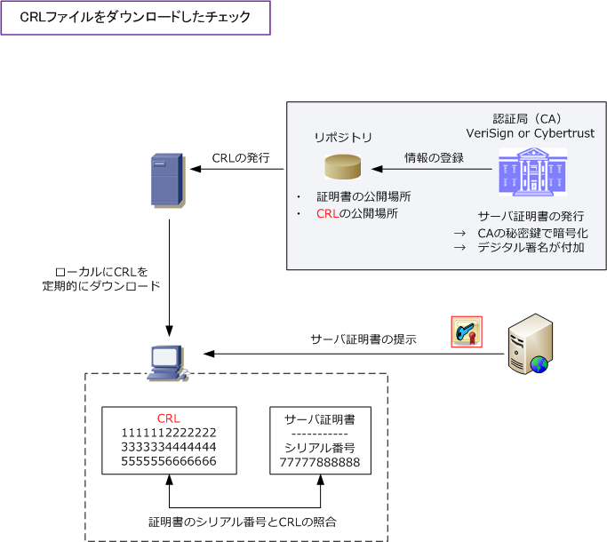
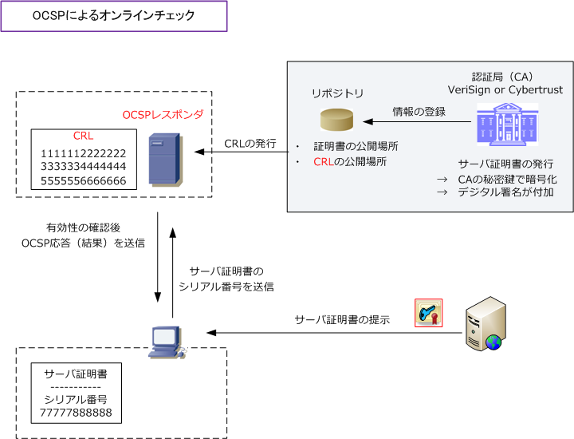

CRL or OCSP
CRL（Certificate Revocation List）とは
CRLとは有効期限よりも前に失効させたデジタル証明書の一覧です。有効期限よりも前に失効させる というのは、例えば証明書の誤発行や証明書の秘密鍵紛失で悪用されるのを回避するための処置です。 認証局では、そのような証明書をCRLに登録して管理します。CRLは日本語では証明書失効リストと 言いますが、正確にはPKIにおける公開鍵証明書のリスト（ 証明書のシリアル番号のリスト ）のこと。
証明書の有効性のチェック
デジタル証明書が失効していないものなのかをチェックする方法は大きく以下の2パターンがあります。
① CRLファイルをダウンロードしてローカルチェック デジタル証明書の受け取り側は、デジタル証明書とCRLを照合することで証明書が現在も有効であるかを 確認できます。CRLは認証局（CA）から定期的に最新情報が配布されるので、それをダウンロードします。 クライアント視点から解説すると、サーバ証明書の有効性をチェックする場合、Webサイトなどから受信 したサーバ証明書のシリアル番号とCRLに登録された証明書のシリアル番号を照合して有効性を確認可能。

SSL-VPN接続などでは、クライアントPCから提示されたクライアント証明書の有効性をチェックする場合、 例えばCisco ASAが指定したCRL参照先に問い合わせ、そのクライアント証明書の有効性をチェックします。
② OCSP（Online Certificate Status Protocol）によるオンラインチェック クライアントがCRLファイルをダウンロードしてチェックする手法の場合は、保存したCRLファイルが最新 とは限らないので定期的にダウンロードする必要がありますが、ここで紹介するOCSPを使用したオンライン チェックでは、デジタル証明書の有効性をリアルタイムで確認できて、クライアントの処理も軽くなります。
OCSPは、X.509公開鍵証明書の失効状態を取得するための通信プロトコルです。①によるCRLの手法の 代替手段として策定された実装です。OCSPクライアントがOCSPサーバ（ OCSPレスポンダ ）に対して デジタル証明書の有効性を確認させることでクライアントが自力でのCRL取得や照合する手間が省けます。

OCSPサーバ（OCSPレスポンダ）は、CA自身やCRLを集中管理するVA（Validation Authority）が運営を 行っています。VAはデジタル証明書の失効リスト（CRL）を集中管理して証明書の有効性をチェックする システムのことです。認証局（CA）とは異なりデジタル証明書の発行は行わず検証機能に特化しています。